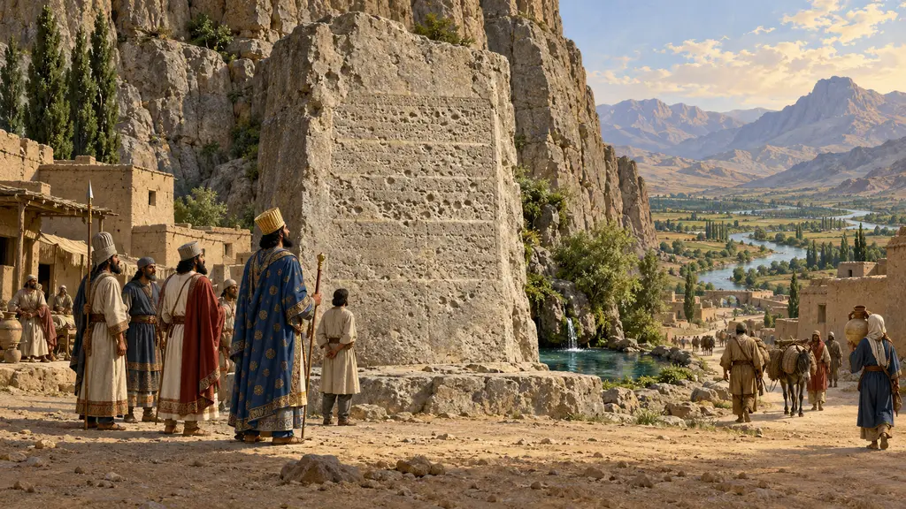
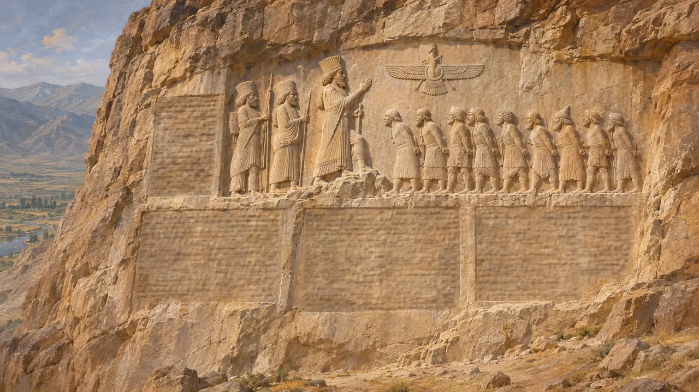
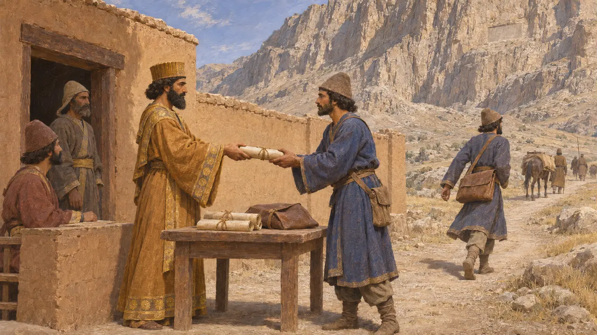
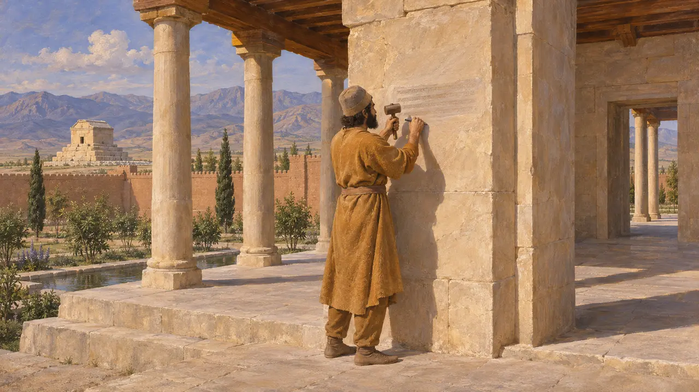
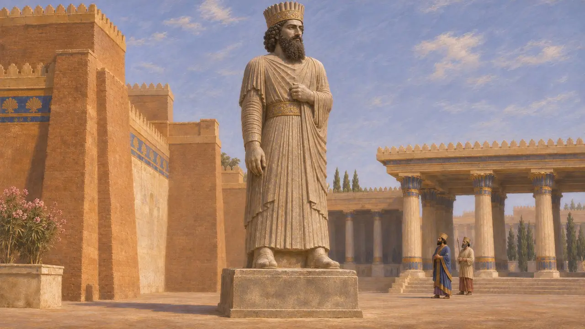
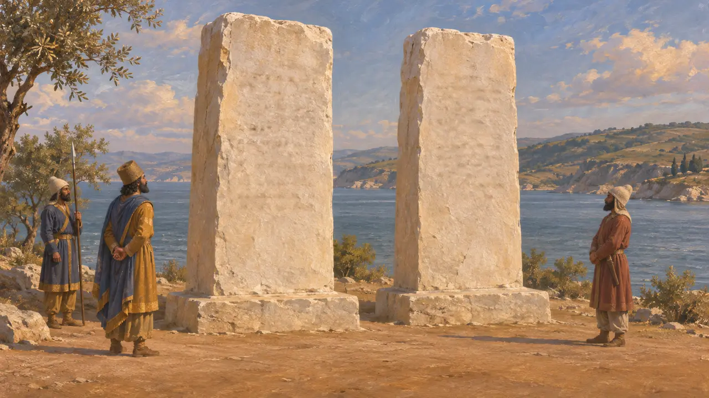

Piedra inscrita
Inscripciones reales en persa antiguo, elamita y babilonio, hacia 520-480 a. e. c.
Los reyes aqueménidas hacían grabar sus palabras en piedra, por lo general en tres lenguas y tres formas de escritura cuneiforme. Estos textos nombraban al rey, su linaje, a su dios Auramazda y sus hazañas. Son la principal voz conservada de los propios reyes, junto a los relatos griegos de Heródoto y otros autores.
En el juego: El juego incluye la Piedra inscrita entre sus edificios de vivienda y la presenta como las palabras del Rey en tres lenguas. Su nota de que los reyes hablaban mediante inscripciones y no mediante estatuas exagera: de Susa se conserva una estatua de Darío.

Tres escrituras en una piedra
En los documentosLa larga inscripción de Darío en Behistún se grabó en persa antiguo, elamita y babilonio, cada uno con su propia forma de escritura cuneiforme. Su carta fundacional del palacio de Susa se conserva en las mismas tres lenguas. El elamita era además la lengua administrativa de las tablillas de la Fortificación de Persépolis, de modo que la elección reflejaba probablemente a los escribas que empleaba la corte. Jerjes mantuvo el modelo, como en su inscripción sobre la supresión de los daiva.
DB; DSf; XPh

Copias enviadas a todas las tierras
En los documentosEl texto de Behistún dice que el Rey envió copias de él por todas las tierras del imperio. Una versión babilónica se conserva en un fragmento de piedra hallado en Babilonia. Una versión aramea se copió en papiro en Elefantina casi un siglo después. Las palabras del Rey llegaron más lejos en copias que en la propia roca, que se alzaba muy por encima del camino.
DB §70; Elephantine papyri

Una nueva escritura para el persa
En disputaEn Pasargada, breves textos en las tres lenguas nombran a Ciro, el rey, un aqueménida. Muchos estudiosos sostienen que la escritura cuneiforme del persa antiguo se ideó bajo Darío, e interpretan un pasaje de Behistún como su reivindicación de una nueva forma de escritura. Según esta opinión, los textos de Ciro los añadió más tarde Darío. Otros defienden que la escritura ya existía antes de él, y la cuestión sigue abierta.
CMa; DB §70; R. Schmitt, The Bisitun Inscriptions of Darius the Great, 1991

También estatuas y relieves
En los documentosLos reyes persas no confiaban solo en las inscripciones. Una estatua de Darío, tallada en Egipto y hallada en Susa en 1972, hoy está sin cabeza, pero probablemente era de tamaño mayor que el natural. Lleva textos en jeroglíficos egipcios y en las tres lenguas cuneiformes. Los reyes aparecían también en relieves sobre paredes rocosas y tumbas, con inscripciones junto a la imagen, como en Behistún y Naqsh-e Rostam.
Susa statue of Darius (DSab); DNa; A. Kuhrt, The Persian Empire, 2007

Columnas en el Bósforo
Relato antiguoHeródoto cuenta que Darío, al pasar a Europa hacia el 513 a. e. c., erigió dos estelas de piedra blanca junto al Bósforo. En ellas se enumeraban los pueblos de su ejército, en una con letras asirias y en la otra con letras griegas. Heródoto menciona también una estela junto a las fuentes del Tearo, en Tracia, que alababa al río y al Rey. No se ha encontrado ninguna de esas piedras, pero la costumbre persa en otros lugares hace verosímil la historia.
Herodotus 4.87; Herodotus 4.91
Fuentes
- Darius, Behistun inscription (DB)
- Darius, Susa foundation charter (DSf)
- Herodotus 4.87, 4.91
- R. Schmitt, The Bisitun Inscriptions of Darius the Great: Old Persian Text, 1991
- A. Kuhrt, The Persian Empire: A Corpus of Sources from the Achaemenid Period, 2007
- P. Briant, From Cyrus to Alexander, 2002